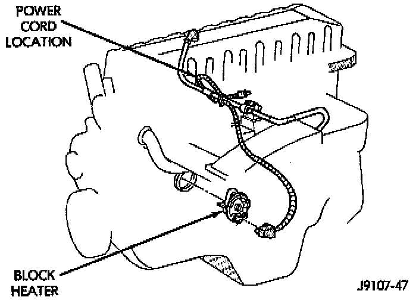

Engine Block Heater: Description and Operation

CAUTION: Do not operate engine unless block heater cord has been disconnected from power source and secured in place. The power cord must be secured in its retaining clips and routed away from exhaust manifolds and moving parts.
GENERAL INFORMATION
An optional engine block heater is available for all models. The heater is equipped with a power cord that is located behind the grille. The cord is attached to an engine compartment component with tie-straps.
LOCATION
The heater is mounted in a core hole of the engine cylinder block (in place of freeze plug) with the heating element immersed in engine coolant.
OPERATION
The heater is operated by ordinary house current: (110 Volt AC) through a power cord located behind the radiator grille. Connect the power cord to a grounded, 110 - 120 volt AC electrical outlet with a grounded, three-wire extension cord.
PURPOSE
This provides easier engine starting and faster warm-up when vehicle is operated in areas having extremely low temperatures. The heater warms the engine providing easier engine starting and faster warm-up in low temperatures.